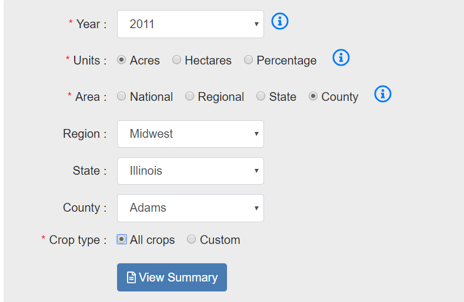
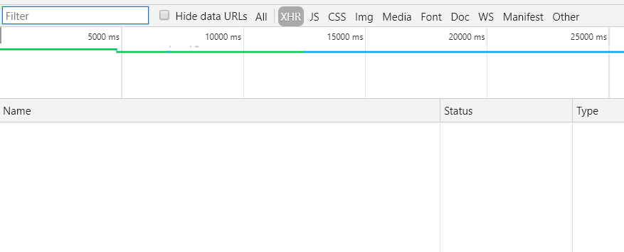
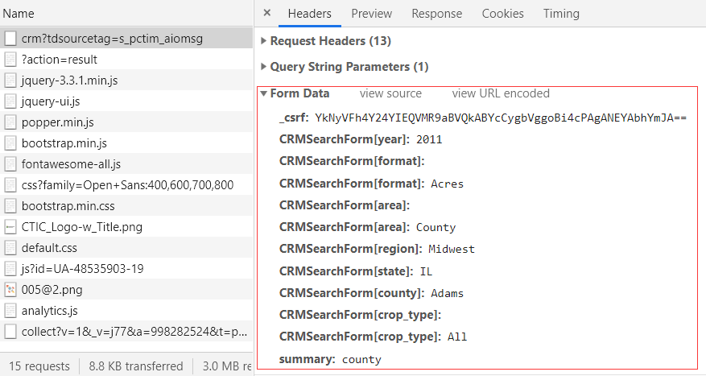
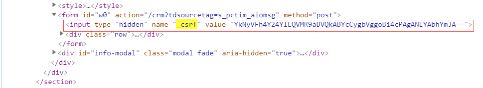
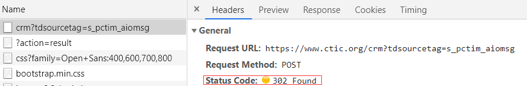
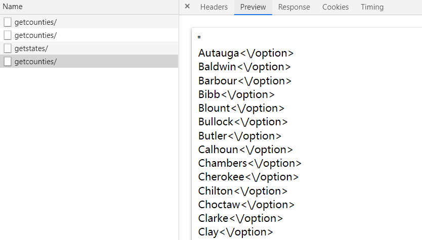
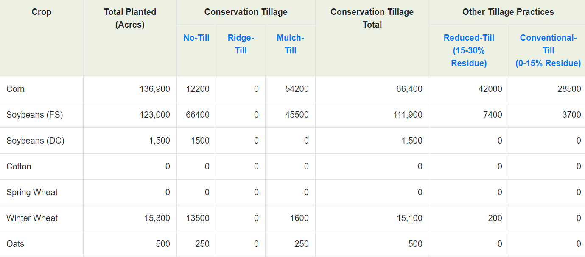

我写爬虫已经写了一段时间了，对于那些使用GET请求或者POST请求的网页，爬取的时候都还算得心应手。不过最近遇到了一个有趣的网站，虽然爬取的难度不大，不过因为表单提交的存在，所以一开始还是有点摸不着头脑。至于最后怎么解决的，请慢慢往下看。
这次爬取的网站是：https://www.ctic.org/crm?tdsourcetag=s_pctim_aiomsg，该网站提供了美国的一些农田管理的数据。要查看具体的数据，需要选择年份、单位、地区、作物种类等，如下图：

根据以往的经验，这种表单提交都是通过ajax来完成的，所以熟练地按F12打开开发者工具，选择XHR选项，然后点击“View Summary”，结果却什么都没有......

这是怎么回事？不急，切换到All看一下有没有什么可疑的东西。果然就找到了下面这个，可以看到在Form Data中包含了很多参数，而且可以很明显看出来是一些年份、地区等信息，这就是表单提交的内容:

可以注意到在这些参数中有一个_csrf，很明显是一个加密参数，那么要怎么得到这个参数呢？返回填写表单的网页，在开发者工具中切换到Elements，然后搜索_csrf看看，很快就找到了如下信息：

其余参数都是表单中所选择的内容，只要对应填写就行了。不过这个请求返回的状态码是302，为什么会是302呢？302状态码的使用场景是请求的资源暂时驻留在不同的URI下，因此还需要继续寻找。

通过进一步查找可知，最终的URL是：https://www.ctic.org/crm/?action=result。
可以看到表单中包含了地区、州、郡县选项，在填写表单的时候，这一部分都是通过JS来实现的。打开开发者工具，然后在页面上点选County，选择Region和State，就能在开发者工具中找到相应的请求。主要有两个请求，如下：
https://www.ctic.org/admin/custom/crm/getstates/
https://www.ctic.org/admin/custom/crm/getcounties/
这两个请求返回的结果格式如下图：

这里可以使用正则匹配，也可以使用lxml来解析，我选择使用后者。示例代码如下：
1 from lxml import etree
2
3
4 html = '"<option value=\"Autauga\">Autauga<\/option><option value=\"Baldwin\">Baldwin<\/option><option value=\"Barbour\">Barbour<\/option><option value=\"Bibb\">Bibb<\/option><option value=\"Blount\">Blount<\/option><option value=\"Bullock\">Bullock<\/option><option value=\"Butler\">Butler<\/option><option value=\"Calhoun\">Calhoun<\/option><option value=\"Chambers\">Chambers<\/option><option value=\"Cherokee\">Cherokee<\/option><option value=\"Chilton\">Chilton<\/option><option value=\"Choctaw\">Choctaw<\/option><option value=\"Clarke\">Clarke<\/option><option value=\"Clay\">Clay<\/option><option value=\"Cleburne\">Cleburne<\/option><option value=\"Coffee\">Coffee<\/option><option value=\"Colbert\">Colbert<\/option><option value=\"Conecuh\">Conecuh<\/option><option value=\"Coosa\">Coosa<\/option><option value=\"Covington\">Covington<\/option><option value=\"Crenshaw\">Crenshaw<\/option><option value=\"Cullman\">Cullman<\/option><option value=\"Dale\">Dale<\/option><option value=\"Dallas\">Dallas<\/option><option value=\"Dekalb\">Dekalb<\/option><option value=\"Elmore\">Elmore<\/option><option value=\"Escambia\">Escambia<\/option><option value=\"Etowah\">Etowah<\/option><option value=\"Fayette\">Fayette<\/option><option value=\"Franklin\">Franklin<\/option><option value=\"Geneva\">Geneva<\/option><option value=\"Greene\">Greene<\/option><option value=\"Hale\">Hale<\/option><option value=\"Henry\">Henry<\/option><option value=\"Houston\">Houston<\/option><option value=\"Jackson\">Jackson<\/option><option value=\"Jefferson\">Jefferson<\/option><option value=\"Lamar\">Lamar<\/option><option value=\"Lauderdale\">Lauderdale<\/option><option value=\"Lawrence\">Lawrence<\/option><option value=\"Lee\">Lee<\/option><option value=\"Limestone\">Limestone<\/option><option value=\"Lowndes\">Lowndes<\/option><option value=\"Macon\">Macon<\/option><option value=\"Madison\">Madison<\/option><option value=\"Marengo\">Marengo<\/option><option value=\"Marion\">Marion<\/option><option value=\"Marshall\">Marshall<\/option><option value=\"Mobile\">Mobile<\/option><option value=\"Monroe\">Monroe<\/option><option value=\"Montgomery\">Montgomery<\/option><option value=\"Morgan\">Morgan<\/option><option value=\"Perry\">Perry<\/option><option value=\"Pickens\">Pickens<\/option><option value=\"Pike\">Pike<\/option><option value=\"Randolph\">Randolph<\/option><option value=\"Russell\">Russell<\/option><option value=\"Shelby\">Shelby<\/option><option value=\"St Clair\">St Clair<\/option><option value=\"Sumter\">Sumter<\/option><option value=\"Talladega\">Talladega<\/option><option value=\"Tallapoosa\">Tallapoosa<\/option><option value=\"Tuscaloosa\">Tuscaloosa<\/option><option value=\"Walker\">Walker<\/option><option value=\"Washington\">Washington<\/option><option value=\"Wilcox\">Wilcox<\/option><option value=\"Winston\">Winston<\/option>"'
5 et = etree.HTML(html)
6 result = et.xpath('//option/text()')
7 result = [i.rstrip('"') for i in result]
8 print(result)上面代码输出的结果为：
['Autauga', 'Baldwin', 'Barbour', 'Bibb', 'Blount', 'Bullock', 'Butler', 'Calhoun', 'Chambers', 'Cherokee', 'Chilton', 'Choctaw', 'Clarke', 'Clay', 'Cleburne', 'Coffee', 'Colbert', 'Conecuh', 'Coosa', 'Covington', 'Crenshaw', 'Cullman', 'Dale', 'Dallas', 'Dekalb', 'Elmore', 'Escambia', 'Etowah', 'Fayette', 'Franklin', 'Geneva', 'Greene', 'Hale', 'Henry', 'Houston', 'Jackson', 'Jefferson', 'Lamar', 'Lauderdale', 'Lawrence', 'Lee', 'Limestone', 'Lowndes', 'Macon', 'Madison', 'Marengo', 'Marion', 'Marshall', 'Mobile', 'Monroe', 'Montgomery', 'Morgan', 'Perry', 'Pickens', 'Pike', 'Randolph', 'Russell', 'Shelby', 'St Clair', 'Sumter', 'Talladega', 'Tallapoosa', 'Tuscaloosa', 'Walker', 'Washington', 'Wilcox', 'Winston']
获取所有郡县信息的思路为分别选择四个地区，然后遍历每个地区下面的州，再遍历每个州所包含的郡县，最终得到所有郡县信息。
在得到郡县信息之后，就可以构造获取农田数据的请求所需要的参数了。在获取农田数据之前，需要向服务器发送一个提交表单的请求，不然是得不到数据的。在我测试的时候，发送提交表单的请求的时候，返回的状态码并不是302，不过这并不影响之后的操作，所以可以忽略掉。
需要注意的是，参数中是有一个年份信息的，前面我一直是默认用的2011，不过要爬取更多信息的话，还需要改变这个年份信息。而通过选择页面元素可以知道，这个网站提供了16个年份的农田数据信息，这16个年份为：
[1989,1990,1991,1992,1993,1994,1995,1996,1997,1998,2002,2004,2006,2007,2008,2011]
得到这些年份信息之后，就可以和前面的郡县信息进行排列组合得到所有提交表单的请求所需要的参数。说道排列组合，一般会用for循环来实现，不过这里推荐一种方法，就是使用itertools.product，使用示例如下：
1 from itertools import product
2
3 a = [1, 2, 3]
4 b = [2, 4]
5 result = product(a, b)
6 for i in result:
7 print(i, end=" ")
8
9
10 # (1, 2) (1, 4) (2, 2) (2, 4) (3, 2) (3, 4) 下面是农田数据的部分截图，其中包含了很多种类的作物，还有对应的耕地面积信息，不过在这个表中有些我们不需要的信息，比如耕地面积总量信息，还有空白行，这都是干扰数据，在解析的时候要清洗掉。

解析农田数据部分的代码如下：
1 et = etree.HTML(html)
2 crop_list = et.xpath('//*[@id="crm_results_eight"]/tbody/tr/td[1]/text()') # 作物名称
3 area_list = et.xpath('//*[@id="crm_results_eight"]/tbody/tr/td[2]/text()') # 耕地面积
4 conservation_list = et.xpath('//*[@id="crm_results_eight"]/tbody/tr/td[6]/text()') # 受保护耕地面积
5 crop_list = crop_list[:-3]
6 area_list = area_list[:-3]
7 conservation_list = conservation_list[:-3]
完整代码已上传到GitHub！